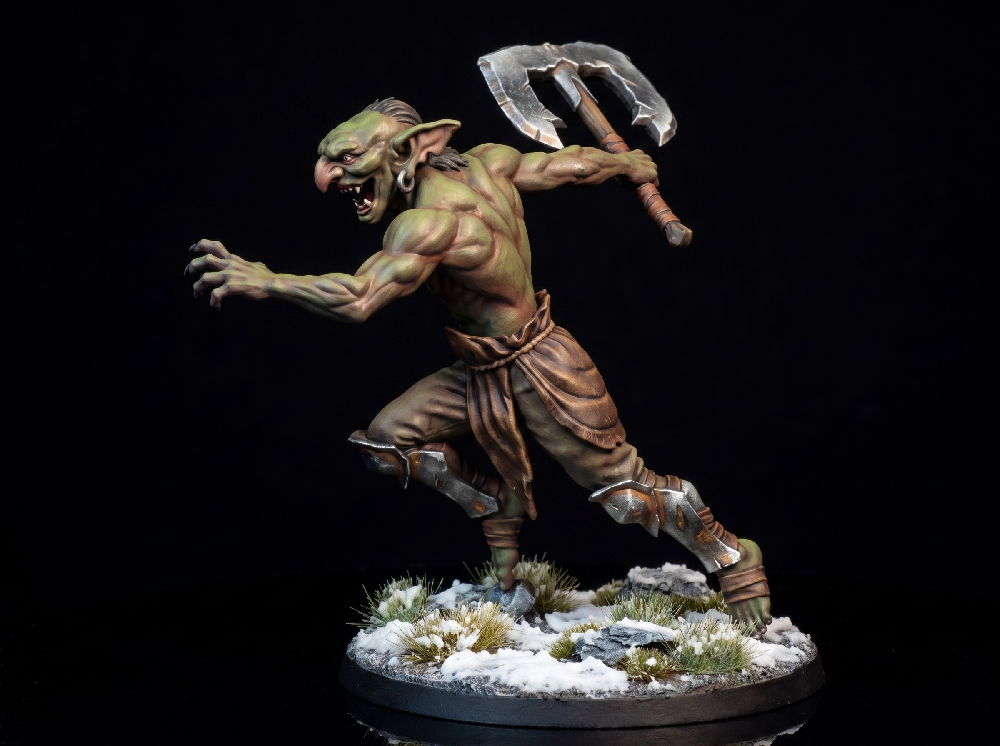

Carrion Juggernaut Dark Fantasy Miniature STL
October 10, 2026

The floor behind Varek gives way completely. Iron grating shatters into the crypt below. Out of the sunken ossuary rises a Carrion Juggernaut. Rusted plate is hammered directly into its dead muscle. It stands four paces tall.
Its right arm ends in a brutal spiked anchor. Heavy winch chains bind its stitched torso. Cold mist vents from an iron visor welded to the collarbone. It does not breathe. It drives the anchor into the stone and hauls itself into the fight.
The Inquisitor lowers his executioner blade. The behemoth charges from the left. The juggernaut swings its massive chain from the right. Varek drops his greatsword into a low guard. Violet fire explodes along the black steel.
Two monsters and an Inquisitor. Varek smiles behind his horned helm. The odds are finally fair.
Get free miniatures:
- Fantasy: https://cults3d.com/@BattleFoundry
- Scifi: https://cults3d.com/@BATTLEFOUNDRYSCIFI
- Grimdark: https://cults3d.com/@DREADWORKS
- Resin Statue: https://cults3d.com/@BlacksiteSyndicate